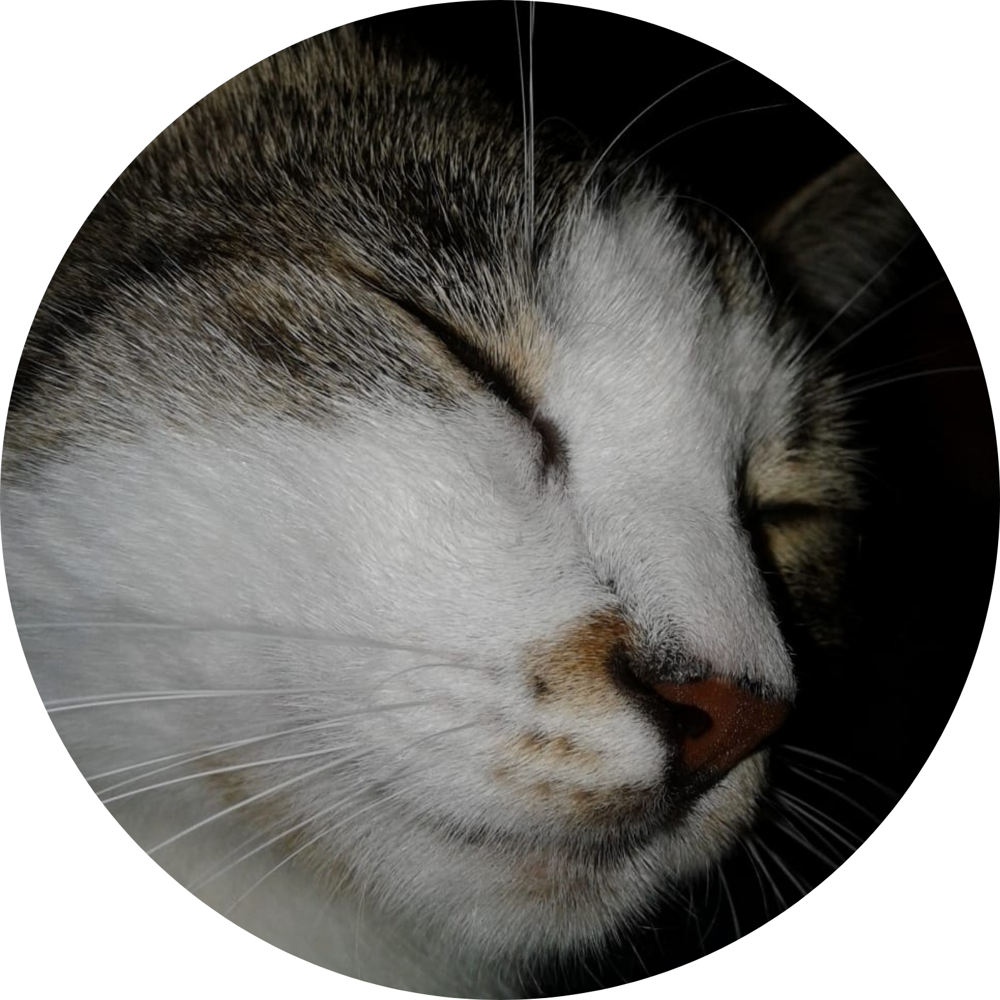

Teknoloji sadece kodlardan ibaret değildir; bir yaşam tarzıdır. Performans odaklı yazılımlar, optimize edilmiş donanımlar ve modern web çözümleri geliştiriyorum. Karmaşayı sadelikle çözüyoruz.
Python tabanlı otomasyon sistemleri ve modern web mimarisi üzerine çalışıyorum. Amacım sadece çalışan değil, aynı zamanda sistem kaynaklarını en verimli kullanan, hızlı ve sürdürülebilir kodlar yazmak.
Bir bilgisayarın gücü, parçalarının toplamından fazlasıdır. Sistem toplama, bileşen uyumluluğu ve performans optimizasyonu konularında derinlemesine analizler yapıyorum. Sınırları zorlamayı severim.
Her proje yeni bir öğrenme sürecidir. Sıradan çözümler yerine, problemlere yaratıcı ve modern yaklaşımlar getirmeyi hedeflerim. Dijital dünyada iz bırakacak işler peşindeyim.
Veri işleme, otomasyon araçları ve performans algoritmaları.
Windows ve Linux tabanlı sistemlerde maksimum verimlilik ayarları.
Modern arayüz tasarımları, HTML5/CSS3 ve kullanıcı deneyimi odaklı yapılar.